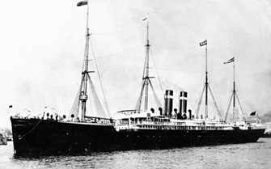
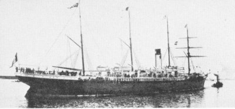
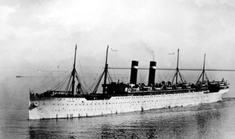
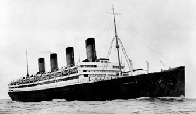

US Passenger Arrival Manifests:
Bark Hesperus Arrived 6 June 1846, Antwerp to New York NARA Film M237-62 |
|||||
| Passenger | Sex | Age | Occupation | Country | Destination |
| N. Uselvink | M | 30 | Joiner | Germany | |
| A. M. Uselvink | F | 26 | |||
| B. Uselding | F | 3 | |||
| G. Uselvink | M | 2 | |||
| N. Uselvink | M | ||||
| P. Uselvink | M | 28 | Joiner | ||
Steamship Achilles Arrived 17 June 1867, Antwerp to New York NARA Film M237-281, Ship 602 |
|||||
| Passenger | Sex | Age | Occupation | Country | Destination |
| Jean B. Uselding | M | 34 | Baker | Holland | |
| Marie Putz | F | 43 | |||
| Niclaus Putz | M | 17 | |||
| Piere Uselding | M | 7 | |||
| Marie Uselding | F | 28 | |||
| Albert Uselding | M | ||||
Steamship Devonia Arrived 20 April 1880, Glasgow to New York NARA Film M237 |
|||||
| Passenger | Sex | Age | Occupation | Country | Destination |
| Gregoin Useldinger | M | 42 | Laborer | Germany | |
| Margariette Useldinger | F | 32 | |||
| Jeannette Useldinger | F | 17 | Domestic | ||
| Paul Useldinger | M | 11 | |||
| Margaruette Useldinger | F | 9 | |||
| Maria Useldinger | F | 4 | |||
| Nicolas Useldinger | M | 3 | |||
| Caroline Useldinger | F |
 Additional Westernland images: 2 || 3 Steamship Westernland Arrived 03 April 1889, Antwerp to New York NARA Film M237-531 |
|||
| Passenger | Sex | Age | Occupation | Country | Destination |
| Joh. Uselding | M | 43 | Carpenter | Germany | |
| Susanna Uselding | F | 15 | |||
 Steamship Friesland Arrived 08 March 1892, Antwerp to New York NARA Film M237 |
|||||
| Passenger | Sex | Age | Occupation | Country | Destination |
| Nicol. Useldingen | M | 21 | Laborer | Germany |
 Steamship Finland Arrived 13 February 1907, Antwerp to New York NARA Film M237 |
| Passenger | Sex | Age | Occupation | Country | Destination |
| Emil Uselding | M | 29 | Laborer | Luxembourg | Chicago, IL |
 Steamship Aquitania Arrived 30 Sept. 1921, Southampton to New York NARA Film M237 |
| Passenger | Sex | Age | Occupation | Country | Destination |
| Michel Nicholas Useldinger | M | 30 | Farmer | Luxembourg | Mentor, OH |
| Immigrated in 1892, returning from a visit to his parents in Dalheim, Lux. | |||||
All names are transcribed as they appear in passenger manifests.
{kind=link}
{kind=link}